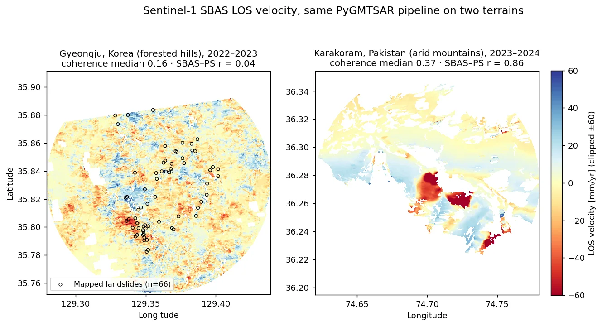
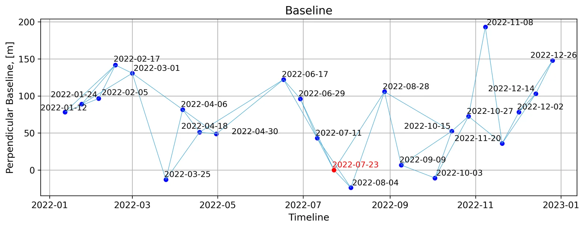
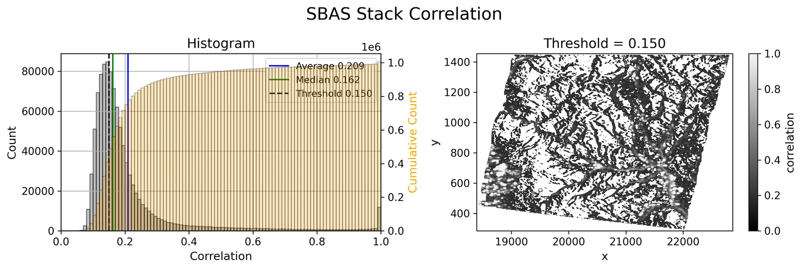
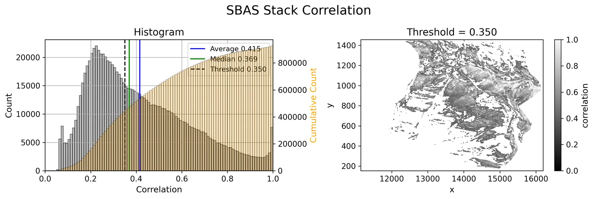
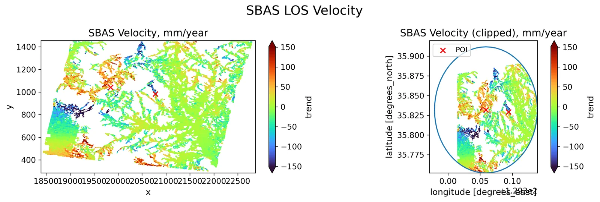
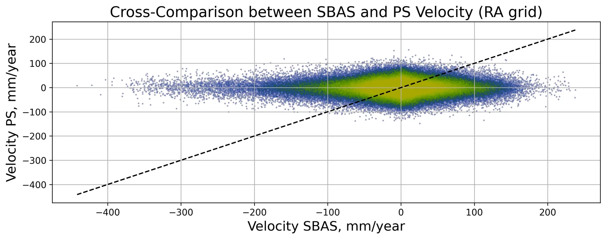
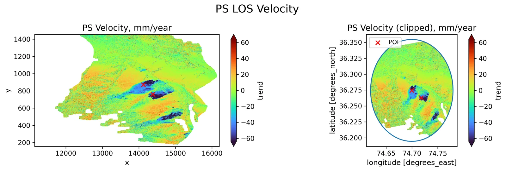
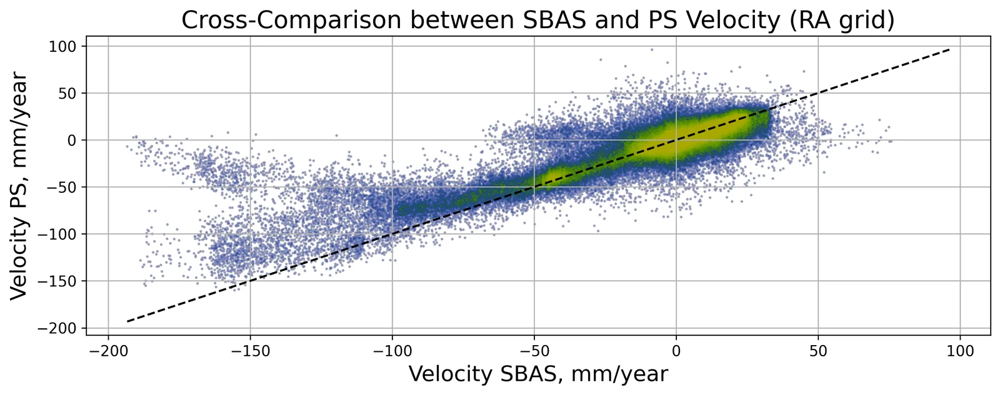
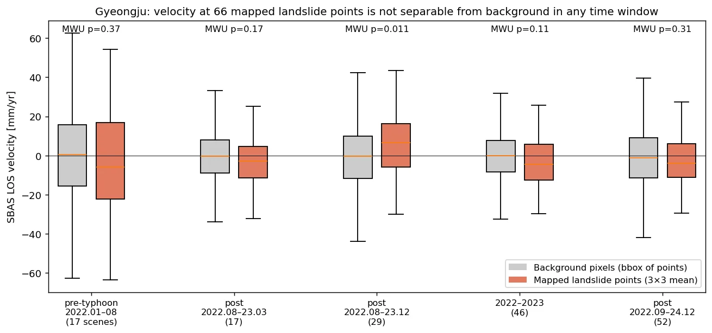

산사태 InSAR — 경주 태풍 산사태 vs 카라코람 사면 (PS·SBAS)Landslide InSAR — Typhoon Landslides in Gyeongju vs Karakoram Slopes (PS & SBAS)
Sentinel-1 버스트 SLC 를 PyGMTSAR 로 PS·SBAS 처리해 2022 태풍 힌남노 직후 경주 토함산 일대 산사태와 파키스탄 카라코람 산악 사면의 변위속도를 비교함. 건조 산악(파키스탄)에서는 SBAS와 PS가 r=0.86으로 일치하며 최대 −192 mm/yr 이동 사면을 잡았지만, 숲이 덮인 경주에서는 결맞음 중앙값 0.16으로 잡음이 지배했고 66개 산사태 지점의 속도가 배경과 구별되지 않았음.Sentinel-1 burst SLCs were processed with PyGMTSAR (PS and SBAS) to compare post-typhoon landslides in Gyeongju, Korea (Typhoon Hinnamnor, Sept 2022) with mountain slopes in the Pakistani Karakoram. In the arid Karakoram, SBAS and PS agreed (r = 0.86) and resolved slopes moving up to −192 mm/yr; in forested Gyeongju, median coherence was 0.16, the velocity field was noise-dominated, and velocities at 66 mapped landslides were indistinguishable from background.
배경 · 목표Background
- 2022-09-06 태풍 힌남노 이후 경주 토함산 일대에 산사태가 다수 발생 — 위성 InSAR 로 사전 징후나 사후 변위를 볼 수 있는지 확인이 목적
- 비교군으로 결맞음이 좋은 건조 고산지(파키스탄 길기트-발티스탄, 36.27°N 74.70°E)의 활동 사면을 같은 파이프라인으로 처리
- 무료 자료(Sentinel-1, Copernicus DEM)와 오픈소스(PyGMTSAR)만으로 PS·SBAS 를 동시에 산출해 상호검증하는 구성
- Typhoon Hinnamnor (6 Sept 2022) triggered many landslides around Tohamsan, Gyeongju; the goal was to test whether InSAR shows precursory or post-event motion there
- As a control, an active slope system in the arid high mountains of Gilgit-Baltistan, Pakistan (36.27°N, 74.70°E) was processed with the identical pipeline
- Free data only (Sentinel-1, Copernicus DEM) and open-source PyGMTSAR, producing PS and SBAS side by side so each can check the other
방법Method
- Sentinel-1 버스트 단위 다운로드(ASF): 경주 상승궤도 IW2 VV, 파키스탄 IW1 상승 59장·하강 52장
- 경주는 기간을 바꿔 7회 실행 — 태풍 전(2022.01–08, 17장), 태풍 후(2022.08–2023.03, 17장 / –2023.12, 29장 / 2022.09–2024.12, 52장), 2022–23 전체(46장) 등
- SBAS: 60일 이내 쌍 다중룩 간섭도 → 평균 결맞음 기준 쌍 선별 → 스택 결맞음 마스크(경주 0.15, 파키스탄 0.35) → SNAPHU 언랩 → 지형·좌표 다항 추세 회귀 제거 → 결맞음 가중 최소제곱 시계열
- PS: 안정성(PS 함수) 가중 단일룩 간섭도 + 1D 언랩 + 최소제곱, SBAS 추세를 위상 보정에 재사용
- 검증: SBAS–PS 화소 상관, 스택 결맞음 분포, 산사태 지점 66개(지점 지도에서 좌표 추출)의 속도 vs 배경(Mann-Whitney U), PlanetScope 전후 NDVI 변화
- Burst-level Sentinel-1 download from ASF: Gyeongju ascending IW2 VV; Pakistan IW1 with 59 ascending and 52 descending acquisitions
- Gyeongju was run seven times with different windows: pre-typhoon (Jan–Aug 2022, 17 scenes), post-typhoon (Aug 2022–Mar 2023, 17; to Dec 2023, 29; Sep 2022–Dec 2024, 52) and full 2022–23 (46)
- SBAS: multilooked interferograms for pairs ≤60 days → pair selection by mean coherence → stack-coherence mask (0.15 Gyeongju, 0.35 Pakistan) → SNAPHU unwrapping → regression removal of topography/coordinate trends → coherence-weighted least-squares time series
- PS: stability-weighted single-look interferograms, 1D unwrapping and least squares, reusing the SBAS trend as a phase correction
- Validation: pixel-wise SBAS–PS correlation, stack-coherence distribution, velocities at 66 mapped landslides vs background (Mann-Whitney U), and pre/post PlanetScope NDVI change
결과Results
- 파키스탄: 스택 결맞음 중앙값 0.37(상승)·0.41(하강), SBAS–PS 속도 r=0.86(상승)·0.80(하강). v<−50 mm/yr 영역 2.37 km²(상승), 최솟값 −192 mm/yr — 두 궤도 모두 같은 사면군에서 음의 LOS 신호
- 경주: 스택 결맞음 중앙값 0.16–0.19, SBAS–PS r=0.04–0.19. SBAS 속도 표준편차 13–25 mm/yr, 화소의 37–59%가 |v|>10 mm/yr — 숲 지형에서 실제 운동이 아닌 잡음으로 판단
- 경주 66개 산사태 지점: 5개 기간 모두 지점 속도 중앙값 차이가 배경 표준편차의 1/3 이하. 유일하게 p<0.05(0.011)인 기간은 부호가 반대(+6.6 mm/yr) — 산사태 신호로 볼 근거 없음
- PlanetScope NDVI(3 m)도 66지점 중앙 ΔNDVI +0.002, −0.1 이상 하락은 5곳뿐(p=0.46) — 지점 좌표 오차·소규모 산사태 희석 가능성, 원인 미확정
- 노트북의 수직 변환이 V_LOS×cosθ 로 계산된 것을 재계산으로 확인(수직운동 가정이면 ÷cosθ, 약 1.67배 과소)
- Pakistan: median stack coherence 0.37 (asc) / 0.41 (desc); SBAS–PS velocity r = 0.86 / 0.80. Area faster than −50 mm/yr: 2.37 km² (asc), minimum −192 mm/yr, with both geometries showing negative LOS motion on the same slopes
- Gyeongju: median stack coherence 0.16–0.19 and SBAS–PS r = 0.04–0.19. SBAS velocity std 13–25 mm/yr with 37–59% of pixels above |10| mm/yr — judged as noise, not motion, over forest
- 66 mapped Gyeongju landslides: in all five windows the point-vs-background median difference was under one third of the background std; the only window with p < 0.05 (0.011) had the opposite sign (+6.6 mm/yr), so it is not a landslide signal
- PlanetScope NDVI (3 m) also showed little change at the points (median ΔNDVI +0.002; only 5 of 66 dropped by more than 0.1; p = 0.46) — possibly point-location error or small scars diluted in the window; cause not resolved
- Recalculation showed the notebook's vertical conversion multiplied LOS by cos θ; under a vertical-motion assumption it should divide, so those maps are ~1.67× too small









배운 점 · 한계What I learned · Limitations
- 같은 파이프라인이라도 지표 피복이 결과를 좌우: 결맞음 중앙값 0.37 vs 0.16 에서 SBAS–PS 일치도가 r 0.86 vs 0.04 로 갈림 — 속도 지도를 보기 전에 SBAS–PS 상호 일치도부터 확인해야 함
- 숲이 덮인 국내 산지의 태풍성 얕은 산사태는 C밴드 12일 간격 InSAR 로는 사전·사후 모두 분리 불가(66지점, p 0.11–0.37). L밴드나 고해상도 광학·SAR 진폭 변화탐지가 필요
- 짧은 기간(17장, 7개월) 속도는 잡음이 연속도로 증폭됨: 경주 SBAS std 25.4(17장) → 13.0 mm/yr(46장)
- 한계: 산사태 지점 좌표는 지도 캡처를 지오레퍼런싱한 것이라 수십 m 오차 가능, 지점 목록의 출처·기준 시점을 확인하지 못함. 전국 SBAS 래스터의 생성 방법도 기록이 없어 교차검증 자료로만 사용
- Land cover dominated the outcome of an identical pipeline: median coherence 0.37 vs 0.16 split SBAS–PS agreement into r = 0.86 vs 0.04 — check SBAS–PS consistency before reading any velocity map
- Shallow typhoon landslides on forested Korean hills could not be separated with 12-day C-band InSAR, before or after the event (66 points, p 0.11–0.37); L-band or high-resolution optical/SAR amplitude change detection is needed
- Short windows inflate noise when converted to rates: Gyeongju SBAS std fell from 25.4 mm/yr (17 scenes) to 13.0 mm/yr (46 scenes)
- Limitations: landslide coordinates came from a georeferenced map capture (tens of metres of possible error) whose source and reference date were not confirmed; a nationwide SBAS raster used for cross-checking had no processing record
관련 코드Code
sar/sentinel-1/insar/sbas/applications/disaster-damage/landslide/
저장소는 센서 → 위성 → 기법 순으로 정리돼 있고, 각 폴더에 입력·출력 표가 있음.The repository is organised by sensor, satellite and technique; each folder documents its inputs and outputs.
코드 저장소는 비공개입니다. 열람이 필요하시면 아래 연락처로 알려주시면 접근 권한을 드립니다.The code repository is private. Email me and I will grant you access.
산출물Deliverables
- SBAS·PS LOS 속도 GeoTIFF(경주 7개 기간, 카라코람 상승·하강)
- PS RMSE GeoTIFF
- PyGMTSAR 단계별 진단 그림 33종/실행
- 산사태 지점 검증 표(지점 66개 × 5개 기간)
- 발표자료 13장(내부)
- SBAS and PS LOS velocity GeoTIFFs (seven Gyeongju windows; Karakoram ascending and descending)
- PS RMSE GeoTIFFs
- 33 PyGMTSAR diagnostic figures per run
- Landslide-point validation table (66 points × 5 windows)
- 13-slide internal presentation
원본 보고서와 발표자료는 사내 자료로 공개하지 않음. 분석 코드는 GitHub에 정리되어 있음.Source reports and decks are internal and not published here. Analysis code is organised on GitHub.